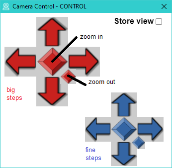

Camera Control is a software "remote control" for conference cameras supporting the features:
- Pan (turn left/right).
- Tilt (turn up/down).
- Zoom (zoom in/out).
- Presets (memory locations to store position and zoom level).
The software is written in the programming languange "Go".
Information concerning "Go" is available on the
Official Go Webpage.
The camera is controlled using protocol "Pelco-D" on USB (COM port).
Other protocols can be integrated easily by adjusting the "Go" sources.
There are 9 presets in the main window to access stored settings fast and easily.
The presets are visualized using a picture, e.g. preset 1: view1.jpg.
It is recommended to update pictures once a new position is set.
If the camera is used in different environments, profiles can be used.
A profile uses separate presets and pictures.
Profiles are organized in sub directories and are sorted by name.
Following presets are used by the profiles:
- first profile: 1..9 (pictures start with view1.jpg)
- second profile: 10..18 (pictures start with view1.jpg)
...
The last activated preset is loaded on start or is set by program parameter.
A USB (COM port) driver is required to access the camera.
The driver can be downloaded here:
CH34x Download
The software tries to find a device named:
"USB-SERIAL CH34<x> (COM<no>)"
If not found it tries to open all COM ports (0..255) until "open" succeeds.
There is an option to add a COMPORT parameter on startup.
This is useful when multiple devices are connected.
ATTENTION: The port numbers might change on reboot or when using other USB connectors!
The software uses a symbolic link for storing the last profile.
Therefore you have to enable the developer mode.
Guide for Enabling Developer Mode
If you have a directory "current" in the "ui" folder please delete that folder to enable creation of the symbolic link.
If it is not enabled there is a fallback to a "copy"-mode with some limitations:
- All pictures are copied on profile change.
- The last profile is not stored.
A preset is activated when a picture 1..9 is selected using the mouse in the main window.

Presets can be programmed or updated using the menu "Camera/Control".

Set the new position and zoom level using the red (big steps) or blue (fine steps) buttons.
You need to open a camera app to see a live view, e.g. windows camera app.
Once finished you can save the setting using "Store View" checkbox and select a loction on main window.
It is recommended to store the camera picture to the corresponding file in folder of the active profile,
e.g. stored on 3. location (<profile>/view3.jpg).
The "Store View" checkbox is deactivated after programming or menu change to avoid unintentionally programming.
You can test the new preset by switching between presets. The "Control" view can be closed after all presets are set.
Create a new profile by adding a sub folder in "ui" directory with view1..9.jpg, e.g. by copying existing profile.
Use a folder name which is sorted at the end, e.g. by using numbers, e.g. "2-Outdoor".
Update all presets as required and update view pictures.
Following paramters are supported:
-LOGFILE=<path + name> Default=log.txt, "" = standard output.
-COMPORT=<COM port number> Default=-1, -1 = use first available port.
-PROFILE=<profile name> Default="", "" = use last one.
The binary "Camera Control.exe" is an archive containing the runtime environment for
"Astilectron" UI.
If there are extraction or startup issues there might be corrupted files in %APPDATA%Camera Control.
You could try to remove this folder and restart the application.
Beside the binary there is a "ui" folder required. There are all HTML files, required pictures, icon and profiles.
There are dependencies to the binary. Try update complete folder from source: delete "ui" and copy "ui" folder again from source directory.
In the log file (e.g. "log.txt" beside the binary) you might find reason for issues.
There is more detailed information compared to the error messages in the UI.